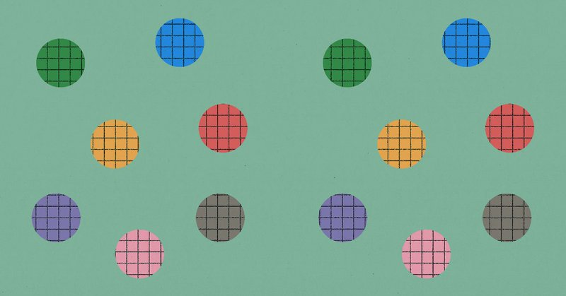
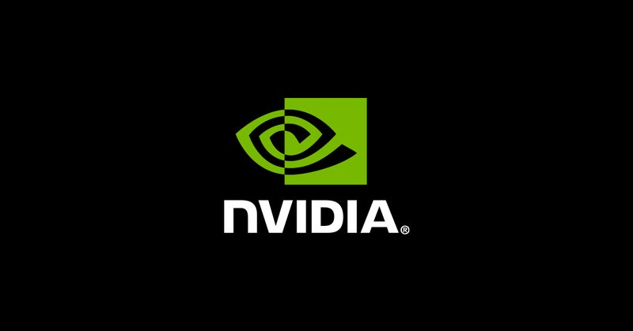
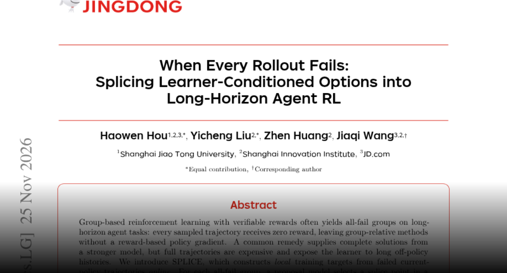
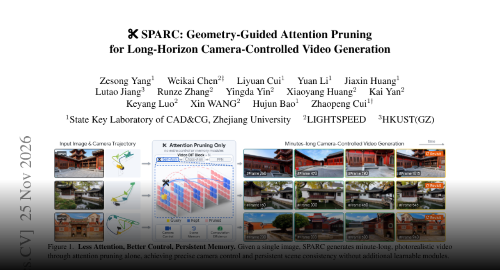
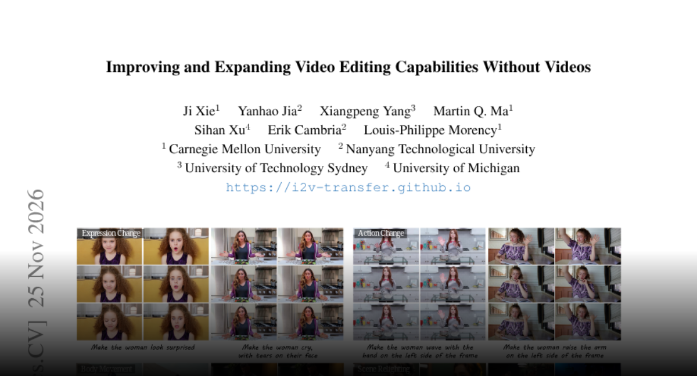
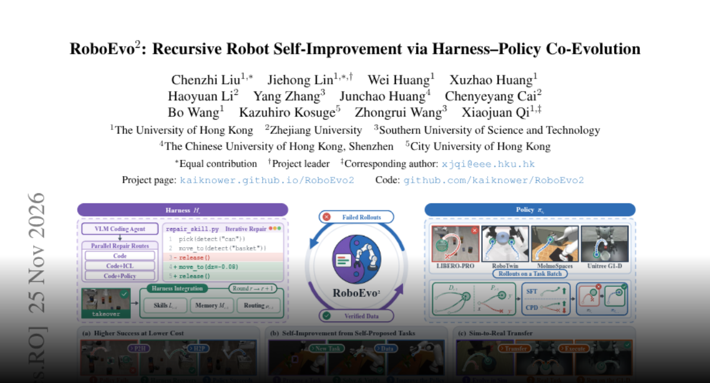
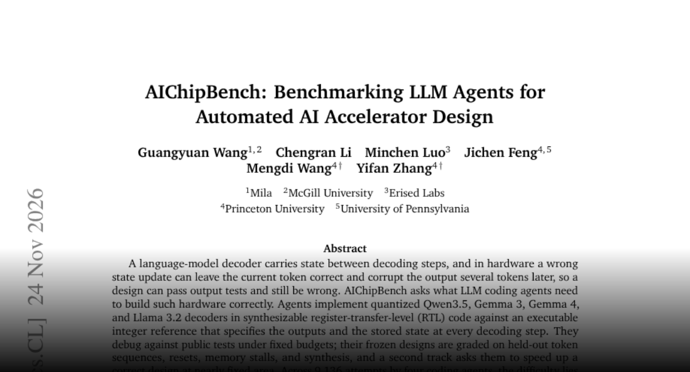

01
SemiAnalysis 用 GDPx 比较近期前沿模型
SemiAnalysis 发布近期模型的 GDPx 评测，摘要称 GPT-6.2 Astra 综合领先，但软件工程表现存在问题；Gemini 4 Neon 进步明显但被高估，Fable 5.2 能力强但昂贵，并涉及中国模型。这些是该机构的判断，而非通用排名，选型仍需结合任务与成本。
每天一次，过滤 AI 噪音
SemiAnalysis 发布近期模型的 GDPx 评测，摘要称 GPT-6.2 Astra 综合领先，但软件工程表现存在问题；Gemini 4 Neon 进步明显但被高估，Fable 5.2 能力强但昂贵，并涉及中国模型。这些是该机构的判断，而非通用排名，选型仍需结合任务与成本。
a16z 以面向智能体的经济为主题，提出产品或工具如何被智能体发现、选择和使用的问题。采集摘要确定了这一商业视角，但未给出完整实施方案。随着智能体参与工作流，企业需要思考服务能力如何被清晰表达，以及如何支持自动化决策。

Hacker News 的热门帖子称，GPT-6.2 Astra 达到使用上限的速度提高 40%，Sol 提高 25%。采集记录包含标题和讨论指标，链接指向公开帖子，但未包含完整政策细节。该消息关系到高成本推理模型的实际可用额度，不应与模型质量变化或每 token 定价调整混为一谈。

Moat 以 OpenRouter 替代方案的定位在 Hacker News 引发讨论。采集内容能确认产品定位，但不足以比较供应商覆盖、路由行为或价格。模型接入和路由正成为重要基础设施选择，团队评估迁移时应根据实际工作负载验证兼容性与成本。

Hacker News 推荐的一篇 The Register 文章讨论 45 摄氏度进水条件下省去冷水机的可能性。采集记录仅含标题，没有完整工程条件，因此不能推广为普遍结论。对于 AI 基础设施，重点是冷却架构如何影响电力需求和设施成本，实际收益仍取决于硬件、气候与系统设计。
Sam Altman 表示，OpenAI 正与少量客户测试 OpenAI Private Intelligence 旗下的 Private Inference。他强调，更强的商业隐私保护可以扩大前沿模型适用的工作范围。目前属于小范围测试，并非全面开放；隐私保护正在与模型能力和成本一起成为企业 AI 的竞争维度。

Anthropic 表示，已将 Messages API 从 Python 迁移到 Rust，并以原有服务为参照验证新实现。多个 Claude 智能体团队负责发现和修复两版之间的差异。这是智能体参与生产系统迁移的具体案例，也凸显自动化改写过程中持续验证行为兼容性的重要性。
Dario Amodei 公开否认自己主张人类向 AI 交出自由意志，并表示其文章反复强调应通过具有正当性的民主程序治理 AI。这一回应在 X 引发广泛关注，是强大 AI 应由谁控制这一争论的重要表态，但不能据此认为治理分歧已经解决。

Sebastian Raschka 发文欢迎黄仁勋回归，并强调 CUDA 对深度学习发展的贡献，回顾 AlexNet 于 2012 年使用两块 GTX 580 训练。多位 AI 人士也发表了类似反应，使其成为行业关注的话题。本条依据的是公开评论，而非关于此次回归具体经过的公司公告。

Runway 表示，与 Meta 的 PyTorch 团队合作，将开放权重的机器人世界动作模型 Praxis-1 接入 ExecuTorch 和 NVIDIA TensorRT。在 H100 和 A100 上，相比参考代码最高加速 1.7 倍，精度相近。这属于部署优化，速度收益应结合硬件和比较基线理解。

Google 展示 Gemini 4 Neon 借助 Antigravity 的 swarm 功能，将照片转成十万单元格的 Google Sheet。官方称其仅用原生公式完成边缘检测、深度着色和六种照明模式，没有嵌入图片或 Apps Script。这展示了一种生成式工作流，但不代表对任意照片均有稳定表现。
Sakana AI 宣布 Sakana Namazu Small，这是一款基于 NVIDIA Nemotron 3 Nano 持续预训练和后训练的 30B 模型。公告提到 25 项基准的平均表现，并与更大模型比较，但采集摘录未包含完整比较内容。较小的日语专用模型与企业部署成本、基础设施和语言适配需求密切相关。

Anthropic 开发者账号分享了 Claude Managed Agents 在产品迭代中重构架构的讨论。该平台面向需要构建智能且安全的智能体的开发者。本条是工程经验分享，并非新版本发布或量化性能报告，可供团队评估自建与托管智能体基础设施的取舍。

Runway 介绍了通用智能体规划广告、再连接 Runway 制作素材的工作流，包括从一份简报生成 UGC 风格视频、动态图形和静态内容，并适配不同语言与平台。这体现通用助手与专用创作工具的结合；公告未提供制作质量或节省时间的独立评估。

Agentic LongLive 将记忆智能体与实时视频生成器分离，为人物、物体和场景维护文字与图像状态，避免把生成视频中的错误写回记忆。作者在 25 个故事的基准上报告一致性提升，H100 上额外生成时间约为 1%，并在八卡 B200 节点实现实时流式生成。

SPLICE 针对长任务强化学习中一组轨迹全部失败、相对奖励无法提供有效信号的问题，让提议模型在当前策略轨迹中插入局部替代步骤，再通过学习器续写评估。作者在软件工程和深度研究任务中报告比 GRPO 高 2.8 至 9.8 个百分点，目标是减少完整强模型解答的成本。

SPARC 用几何引导的注意力剪枝同时支持视频扩散模型的相机控制和场景记忆：已见区域连接对应历史 token，未知区域保留密集注意力。作者报告相机遵循和场景重访质量改善，并在结合四步蒸馏时超过五十倍加速；这一数字不能仅归因于剪枝。

I2VT 让视频编辑器以单帧视频方式处理图像，并由图像编辑器引导去噪预测，无需改变架构或收集新的视频配对数据。作者在三个视频编辑器及扩展基准上评估动作、表情、身体运动和重新打光等任务，探索降低视频训练数据需求，同时保持推理时的时间一致性。

RoboEvo2 在两个方向迭代：根据策略失败改进智能体工具、技能和记忆，再用验证成功的轨迹及偏好蒸馏训练策略。作者报告无需新增人类示范即可在 LIBERO-PRO 大幅提升，并在其他机器人环境测试。其重点是推理求解与高效控制的反馈循环，结果需结合实验环境理解。

CARE-OPD 将学生错误纳入训练历史，利用置信度过滤教师响应，并根据后续执行证据分配重放重点。作者在 SWE-bench Verified 报告 59.5% 成功率，相比异步在线蒸馏减少 45% 训练时间和 44% 环境动作。该研究把行为覆盖与昂贵交互数据的使用效率联系起来。

研究比较了模型自主编辑上下文与框架触发压缩，在文档研究和机器学习工程任务中发现，有效使用上下文 API 的模型在紧张 token 预算下表现更好，但不同模型和提示差异明显。论文还报告复用未变化后缀的 KV 缓存可降低预填充计算，强调模型训练与推理服务的协同设计。

AIChipBench 评估编码智能体以可综合硬件描述实现语言模型解码器的能力，同时测试输出与内部状态，因为错误更新可能延迟多个 token 才显现。作者发现定位首个状态差异的反馈能显著改善通过率，许多此前通过的设计在扩大测试后失败，凸显状态验证与泛化测试的重要性。